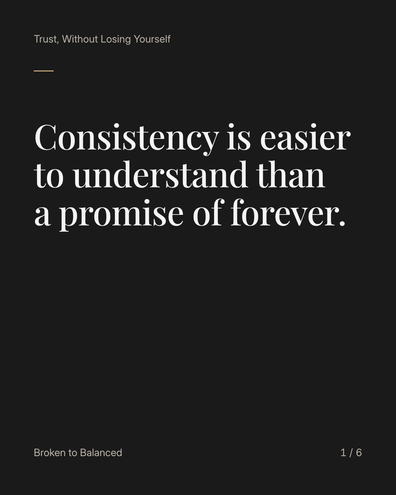
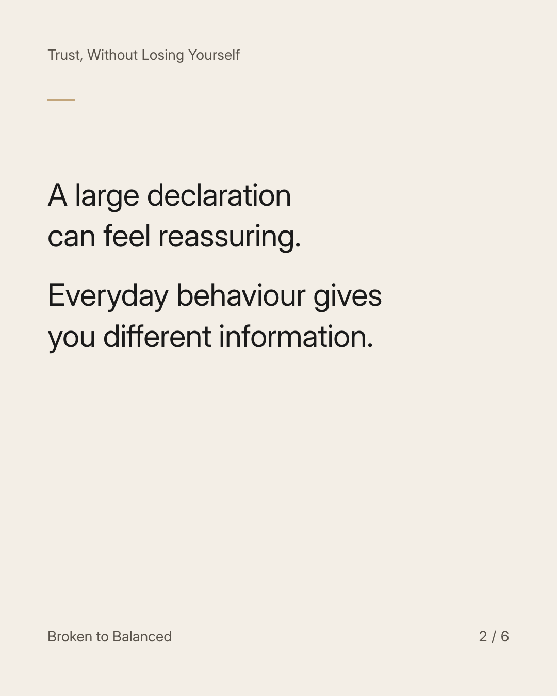
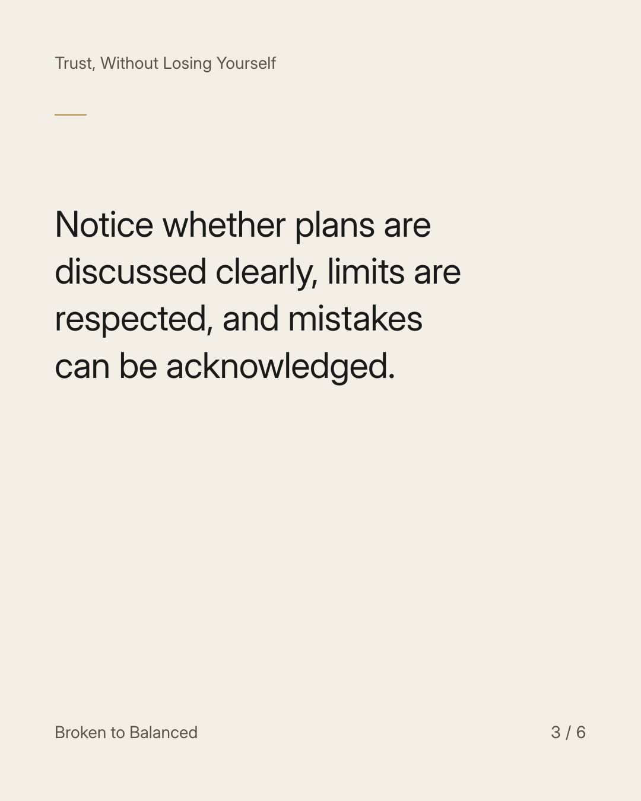
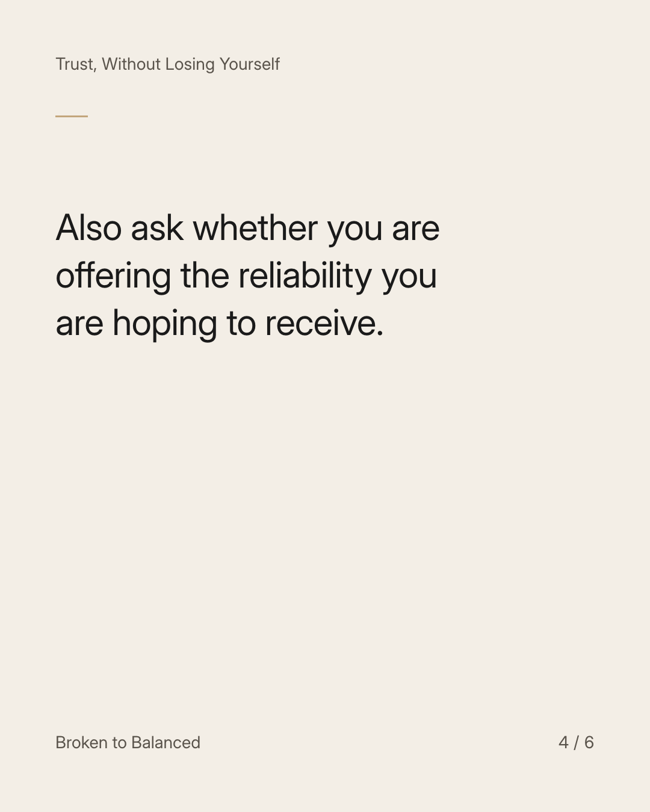
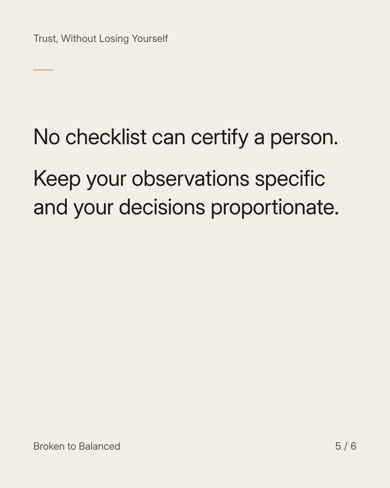

Exact text and accessibility text
Consistency is easier to understand than a promise of forever.
Slide 1 of 6. Consistency is easier to understand than a promise of forever.


Exact text and accessibility text
A large declaration can feel reassuring. Everyday behaviour gives you different information.
Slide 2 of 6. A large declaration can feel reassuring. Everyday behaviour gives you different information.


Exact text and accessibility text
Notice whether plans are discussed clearly, limits are respected, and mistakes can be acknowledged.
Slide 3 of 6. Notice whether plans are discussed clearly, limits are respected, and mistakes can be acknowledged.


Exact text and accessibility text
Also ask whether you are offering the reliability you are hoping to receive.
Slide 4 of 6. Also ask whether you are offering the reliability you are hoping to receive.


Exact text and accessibility text
No checklist can certify a person. Keep your observations specific and your decisions proportionate.
Slide 5 of 6. No checklist can certify a person. Keep your observations specific and your decisions proportionate.

Exact text and accessibility text
Send this to someone learning to value the ordinary parts of trust.
Slide 6 of 6. Send this to someone learning to value the ordinary parts of trust.
Exact caption
Plain-text fallback: select and copy the caption.